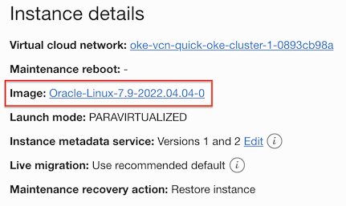
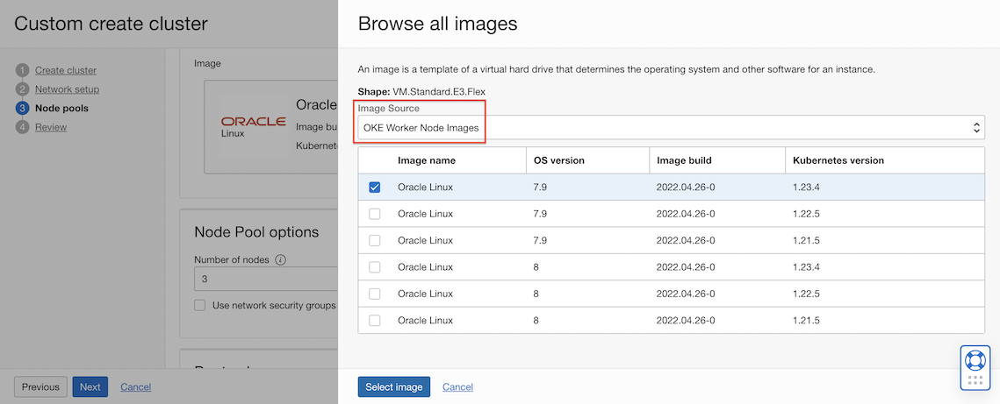
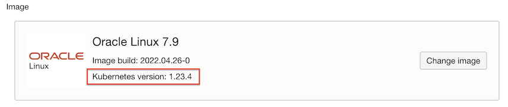
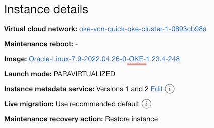
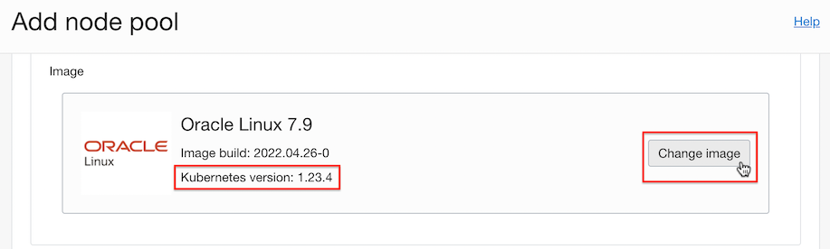

Support for OKE images as worker node base images
Worker Node의 베이스 이미지로 범용 이미지가 아닌 OKE 전용 이미지를 사용하므로 이전보다 더 빠르게 클러스터 생성 및 확장이 가능합니다.
업데이트 사항
Worker Node의 VM 기본 이미지로 전용 OKE 이미지 지원
이제 클러스터 생성시 또는 Node Pool에서 노드 이미지 지정지 OKE 전용 이미지를 선택할 수 있습니다. 클러스터 생성시, 노드 풀 추가 및 노드 추가시 범용이미지에 Worker Node화 하기 위해 모듈을 설치하는 것보다, 필요한 모듈이 이미 설치된 전용 이미지를 사용하므로 클러스터 생성, 노드 풀 추가 및 노드 확장시 보다 빠르게 프로비저닝 할 수 있습니다.
기능 업데이트 전
기존 OKE 클러스터에서는 Worker Node를 위한 전용 이미지를 사용하지 않고, Platform Images내의 범용 이미지를 사용하였습니다.

기능 업데이트 후
- Custom create 모드로 클러스터를 만들 때 Node Pool 설정에서 Worker Node 이미지를 OKE 전용 이미지를 선택할 수 있습니다. 기본 OKE 이미지를 사용하고, 이미지 선택을 통해 원하는 이미지를 선택할 수 있습니다.

- OKE 이미지를 선택하면, 아래와 같이 노드 이미지에 Kubernetes 버전이 표시됩니다.

- 생성후 Node Compute Instance 정보에 들어가면 이미지가 OKE 인 걸 확인할 수 있습니다.

- Node Pool 단위로 Shape과 Image를 지정할 수 있기 때문에, 기존 Node Pool 설정시 또는 신규 Node Pool 추가 시에 OKE 전용 이미지를 선택할 수 있습니다.

이 글은 개인으로서, 개인의 시간을 할애하여 작성된 글입니다. 글의 내용에 오류가 있을 수 있으며, 글 속의 의견은 개인적인 의견입니다.